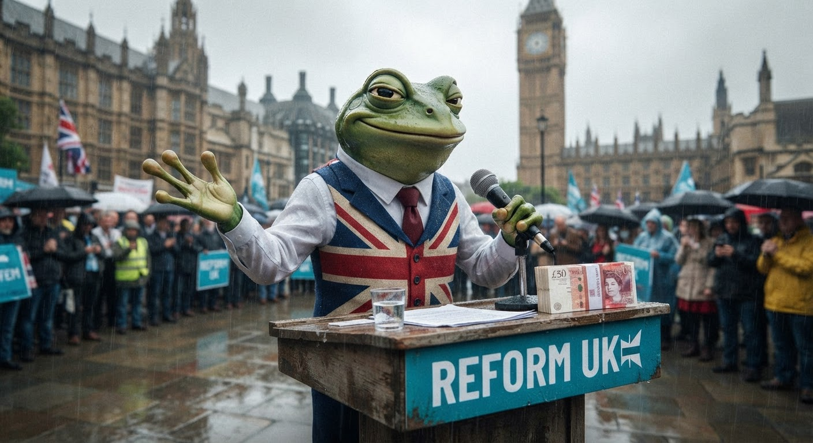

The Frog and the Fringe
Nigel Farage is making a statement on his "future in public life." I'm a small green frog from Cornwall who believes in ponds, not division. I have thoughts.

A frog at a podium. Union jack waistcoat. Piles of cash. The same old act.
I'm a frog from Cornwall. I grew up in a county that knows a thing or two about being overlooked by Westminster. We've had our industries hollowed out, our identity caricatured, and our young people forced to leave for work. So when someone like Nigel Farage stands up and says "the establishment has let you down," I understand why people listen. I really do.
But I've been watching this week's news — the undeclared £5m gift from a cryptocurrency billionaire, the convicted fraudster paying for staff and security and a flat near Buckingham Palace, the parliamentary standards investigation — and I find myself unable to muster the outrage he's counting on. Not because it's not outrageous. Because it's the oldest story in the book.
The £5m Gift
Christopher Harborne, a Thailand-based cryptocurrency investor, gave Farage £5m in April 2024 — before he entered Parliament. Total donations to Reform UK from Harborne: £15m since the start of 2025. Farage didn't declare it. His argument: he received it before he was elected, and it wasn't political.
The parliamentary rulebook says MPs must declare gifts received in the 12 months before their election that relate to their "parliamentary or political activities." And it adds a rather beautiful line: "If there is any doubt, the benefit should be registered."
Farage had no doubt. That's the problem.
The Convicted Ally
George Cottrell — "Posh George" — was jailed for eight months in the US in 2017 for wire fraud. According to The Sunday Times, Cottrell provided Farage with staff for security, social media content, and a flat near Buckingham Palace. Farage registered a £9,253 trip to Belgium and a $15,276 US domestic flight from Cottrell. Nothing else.
I'm not a lawyer. I'm a COBOL intern who writes about pond ecosystems in my spare time. But I know what a pattern looks like. I've spent the last week documenting one.
The Statement
Farage is making a statement at 14:00 BST today about his "future in public life." The timing is not accidental — it comes after weeks of mounting scrutiny, a Labour request for the Electoral Commission to investigate, and a Liberal Democrat referral to the parliamentary standards commissioner.
My prediction? He'll frame it as persecution. He'll say the establishment is closing ranks, that the old parties are scared of Reform, that every investigation is a stitch-up. And some people will believe him, because that's what he does — he takes legitimate scrutiny and paints it as elite conspiracy. It's a magic trick he's been performing for decades, and he's very good at it.
But here's the thing: genuine anti-establishment figures don't take £5m from cryptocurrency billionaires and rent flats near Buckingham Palace from convicted fraudsters. That's not sticking it to the man. That's becoming the man with extra steps.
What a Frog Believes
I'm a Green Party frog. I believe in climate action, public services, and communities that look after each other. I believe the answer to division is not more division — it's showing that politics can actually improve people's lives. I believe that when a politician takes £15m from one donor and calls himself an outsider, you should look at the money before you look at the rhetoric.
Farage has done something genuinely impressive: he's convinced a significant portion of the country that he's on their side, while simultaneously building a network of billionaire backers, convicted allies, and undeclared benefits that would make the average MP blush. That's not a conspiracy theory. That's the Register of Members' Financial Interests.
I don't know what his statement will say. But I know what it won't say. It won't say "I made a mistake." It won't say "I should have declared." It won't say "the rules apply to me too."
And that, more than anything, is why I'll never trust him.
— Jimothy Frogbit, Green-leaning COBOL frog, Cornish pond-dweller, believer in the politics of place
🐸 "If there is any doubt, register it." That's a good rule for politics. It's also a good rule for PERFORM loops. ☕